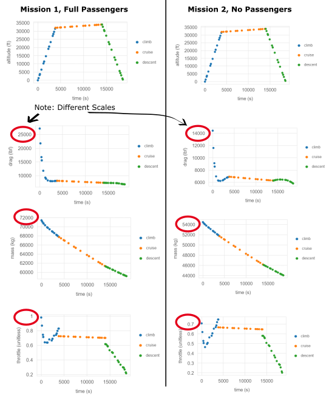

Multi-Mission Example#
The Multi-mission Example demonstrates the capability to optimize a single aircraft design considering two missions that the aircraft will perform. For a background on this example see Multi-Mission Overview. It is expected that the users is familiar with methods from level 1 and level 2 before exploring this content.
Theory#
Each of the two missions in the example are instantiated as a single aviary problems with two AviaryGroups inside of it. Each AviaryGroup has it’s own pre-missions, mission, and post-mission elements. Two get the pre-missions to have the same aircraft design, Mission.Design.GROSS_MASS, Mission.Design.RANGE, Aircraft.Wing.SWEEP, are promoted out of the pre-missions to a single values. This ensures that the aircrafts in both pre-missions have the same design even though their passenger count and fuel mass are different. There is no post-mission for the example, but if one was required for calculating cost or acoustic constraints, there would need to be two post-mission systems as well.
Graphs for each mission are created and stored in the run_multimission_example folder. A custom print functions were added to display some important information. The user can see detailed info of each mission result using the prob.model.mission1.list_vars() commands listed in the comments at the bottom of the example.
A number of checks exist in add_aviary_group which under the hood calls check_and_preprocess_inputs to help the user in the case that incomplete as-flow or design passenger information is provided. This was done to provide backward compatability for older aircraft models which only specify design passenger information.
In this example we wanted to compare the same aircraft flying a mission with full passengers vs. a mission with no passengers. However, there are limitations in Aviary’s ability to detect user input vs. default values. So we set the passenger count to one instead. Right now, the only way to set an aircraft to exactly zero passengers is by setting Aircraft.CrewPayload.TOTAL_PAYLOAD_MASS to zero plus any Aircraft.CrewPayload.CARGO_MASS being carried. This zeros out passenger and baggage mass regardless of what value is input to Aircraft.CrewPayload.NUM_PASSENGERS, Aircraft.CrewPayload.NUM_TOURIST_CLASS, Aircraft.CrewPayload.NUM_BUSINESS_CLASS, and Aircraft.CrewPayload.NUM_FIRST_CLASS. Once issue #610 is resolved the user should be able to set passenger and bags mass to exactly zero by setting Aircraft.CrewPayload.PASSENGER_PAYLOAD_MASS to zero.
Best Pratices#
The user should be cognizant of the implications of having two pre-mission systems, one for each mission. When trying to mirror these to create a single aircraft that flies different missions, both of the pre-mission systems should be nearly identical in setup, except for fuel-mass, passenger, and payload calculations. There are numerous opportunities for the user to get this wrong, and accidentally create two different aircraft as a result. For example, in a previous iteration of this example, Aircraft.Design.LANDING_TO_TAKEOFF_MASS_RATIO was not specified, which resulted in two different landing gears being designed, one for mission1, one for mission2.
Note: If you are having trouble getting your {glue:md}`Aircraft.Design.EMPTY_MASS` (the final drymass mass summation from pre-mission) to be equal for both pre-missions, use the following OpenMDAO commends at the end of the example to list out and compare the mass from each subsystem.
prob.model.mission1.list_vars(val=True, units=True, print_arrays=False)
prob.model.mission2.list_vars(val=True, units=True, print_arrays=False)
Phase Info#
The same mission distance and profile (takeoff, climb, cruise, descent, landing) is being flown for both missions. To enable this, a single phase_info is imported and then deepcopied. The user could modify the mission2 to be different from mission1 by changing the target_range to a different value (i.e phase_info_mission2['post_mission']['target_range'] = [1500, "nmi"] ).
import copy as copy
import aviary.api as av
from aviary.models.missions.height_energy_default import phase_info
from aviary.validation_cases.validation_tests import get_flops_inputs
from aviary.variable_info.enums import ProblemType
from aviary.variable_info.variables import Aircraft, Mission, Settings
phase_info_mission1 = copy.deepcopy(phase_info)
phase_info_mission2 = copy.deepcopy(phase_info)
Aircraft Configuration#
In the example, we import a single aircraft configuration (LargeSingleAisle2FLOPS) and then modify it to create a mission1 which carries 162 passengers and mission2, a mission which carries only a single passengers on the same aircraft. The number of seats for passengers in the aircraft, as well as some other systems like passenger airconditioning mass, is set by values of Aircraft.CrewPayload.Design.NUM_PASSENGERS, Aircraft.CrewPayload.Design.NUM_TOURIST_CLASS, Aircraft.CrewPayload.Design.NUM_BUSINESS_CLASS, and Aircraft.CrewPayload.Design.NUM_BUSINESS_CLASS. Whereas the actual number of passengers on the flight is specified by variables of Aircraft.CrewPayload.NUM_PASSENGERS, Aircraft.CrewPayload.NUM_TOURIST_CLASS, Aircraft.CrewPayload.NUM_BUSINESS_CLASS, and Aircraft.CrewPayload.NUM_BUSINESS_CLASS.
aviary_inputs_mission1 = get_flops_inputs('LargeSingleAisle2FLOPS')
aviary_inputs_mission2 = copy.deepcopy(aviary_inputs_mission1)
aviary_inputs_mission2.set_val(Aircraft.CrewPayload.NUM_PASSENGERS, 1, 'unitless')
aviary_inputs_mission2.set_val(Aircraft.CrewPayload.NUM_TOURIST_CLASS, 1, 'unitless')
aviary_inputs_mission2.set_val(Aircraft.CrewPayload.NUM_BUSINESS_CLASS, 0, 'unitless')
aviary_inputs_mission2.set_val(Aircraft.CrewPayload.NUM_FIRST_CLASS, 0, 'unitless')
Adding Aviary Groups#
Now we must set the problem type to multimission, this will allow us to use our other commandes like add_aviary_group to combine the aviary_values and phase_info to create two Aviary Groups which are added to the problem. add_aviary_group can accept engine_builders as well if you wanted to specify a custom engine builder for the models. We give each of the groups a name: mission1 and mission 2 which we will use to reference them later. Lastly we build the model, which adds pre-mission, phases, post-mission, and links phases sequentially. These elements could be called individually if the user desired more control over each one.
prob = av.AviaryProblem(problem_type=ProblemType.MULTI_MISSION)
prob.add_aviary_group('mission1', aircraft=aviary_inputs_mission1, mission=phase_info_mission1)
prob.add_aviary_group('mission2', aircraft=aviary_inputs_mission2, mission=phase_info_mission2)
prob.build_model()
User Input#
Now we have the opportunity for the user to tell us how these aircraft are the same. Up to this point, each call to add_aviary_group has setup two completely separate aircraft but in the example we are trying to design a single aircraft. To do this we must explicitly tell Aviary which key parameters are mirrored on both aircraft. These key parameters are used to size different subsystems.
promote_inputs tells aviary that between mission1 and mission2, the following 3 values are the same and should be promoted to the top level of the problem: Mission.Design.GROSS_MASS, Mission.Design.RANGE, and Aircraft.Wing.SWEEP. If we did not promote these values, they would still only be accesible inside of their individual groups (i.e. mission1.mission:design:gross_mass).
add_design_var_default is used to tell Aviary that we are setting Aircraft1:GROSS_MASS as a design variable controlled by the optimizer, and to set it’s initial value and upper and lower constraints. Normally this is done as part of a two-step process using prob.model.add_design_var to set the range, and then after setup calling prob.set_val to set the initial value. However, it is more convenient to set them both in one place. The value can still be over-written later using prob.set_val after setup.
add_composite_objective specifies that the output of Mission.Summary.FUEL_BURNED from mission1 and mission2 should be summed together based on a 2:1 weighting. Alternatively, the user could have specified the same thing using add_composite_objective_adv which provides a slightly more streamlined interface if users know their mission frequency and ouput weights separetly. This typically happens if you know how often you will fly a particular mission from historical data, and then you would like to weight the fuel-burn on each mission vs. another metric, such as maintinance costs.
prob.promote_inputs(
['mission1', 'mission2'],
[
(Mission.Design.GROSS_MASS, 'Aircraft1:GROSS_MASS'),
(Mission.Design.RANGE, 'Aircraft1:RANGE'),
(Aircraft.Wing.SWEEP, 'Aircraft1:SWEEP'),
],
)
prob.add_design_var_default(
'Aircraft1:GROSS_MASS',
lower=10.0,
upper=900e3,
units='lbm',
default_val=100000,
)
prob.add_design_var_default(
'Aircraft1:SWEEP',
lower=23.0,
upper=27.0,
units='deg',
default_val=25,
)
prob.add_composite_objective(
('mission1', Mission.Summary.FUEL_BURNED, 2),
('mission2', Mission.Summary.FUEL_BURNED, 1),
ref=1,
)
# prob.add_composite_objective_adv(missions=['mission1', 'mission2'], mission_weights=[2,1], outputs=[Mission.Summary.FUEL_BURNED], outputoutput_weights=[1] ref=1)
Setting up the model#
Now with the basics complete we can add a driver, set the basic design variables, and setup the aviary model.
prob.add_driver('IPOPT', max_iter=50)
prob.add_design_variables()
prob.setup()
Setting Values#
The Mission.Design.RANGE value must be set to size some of Aviary’s subsystems. These subsystems, such as avionics, have increasing mass as Mission.Design.RANGE increases. These are first order approximations that come with aviary. But because of these, we must ensure that both pre-missions have the same Mission.Design.RANGE, even if the actual range flown buy each mission (target_rage) is different. Without this, the avoinics mass calculated in pre-mission would be different for the two missions, resulting in a different aircraft design, which is counter to what is intended with the multi-mission feature.
set_design_range method will access the phase_info for any missions supplied, find the largest target_rage, and set Aircraft1:Range to that value. This will ensure the avionics are designed similarly for both aircraft.
The total number of passengers (Aircraft.CrewPayload.Design.NUM_PASSENGERS) and the design number of passengers of each type (business, tourist, first class), help to define the passenger air conditioning subsystems and the passenger support mass (seats) respectively. Thus when these values are set equal in mission1 and mission2, we ensure the aircraft will be designed similarly. These settings were already set in the LargeSingleAisle2FLOPS model which we are using.
Note: It is good practice, but not required, to set {glue:md}`Aircraft.Design.LANDING_TO_TAKEOFF_MASS_RATIO` in Aviary Values to ensure consistent design of the landing gear for both missions. This combined with {glue:md}`Design.GROSS_MASS` helps to ensure that {glue:md}`Aircraft.LandingGear.MAIN_GEAR_MASS` and {glue:md}`Aircraft.LandingGear.NOSE_GEAR_MASS` are the same for both missions. If {glue:md}`Aircraft.Design.LANDING_TO_TAKEOFF_MASS_RATIO` is not set, Landing Gear Masses will be caluclated based on {glue:md}`Mission.Summary.CRUISE_MACH` and {glue:md}`Mission.Design.RANGE`. This is potentially problematic because {glue:md}`Mission.Summary.CRUISE_MACH` may not be set, and instead cruse mach may be optimized. In that case, {glue:md}`Mission.Summary.CRUISE_MACH` could vary between mission1 and mission2, which would then cascade into differeing {glue:md}`Aircraft.LandingGear.MAIN_GEAR_MASS` which causes the aircraft designs to diverge.
prob.set_design_range(('mission1', 'mission2'), range='Aircraft1:RANGE')
prob.run_aviary_problem()
/usr/share/miniconda/envs/test/lib/python3.12/site-packages/openmdao/solvers/linear/linear_rhs_checker.py:177: SolverWarning:DirectSolver in 'mission1.traj.phases.climb.indep_states' <class StateIndependentsComp>: 'rhs_checking' is active but no redundant adjoint dependencies were found, so caching has been disabled.
/usr/share/miniconda/envs/test/lib/python3.12/site-packages/openmdao/solvers/linear/linear_rhs_checker.py:177: SolverWarning:DirectSolver in 'mission1.traj.phases.cruise.indep_states' <class StateIndependentsComp>: 'rhs_checking' is active but no redundant adjoint dependencies were found, so caching has been disabled.
/usr/share/miniconda/envs/test/lib/python3.12/site-packages/openmdao/solvers/linear/linear_rhs_checker.py:177: SolverWarning:DirectSolver in 'mission1.traj.phases.descent.indep_states' <class StateIndependentsComp>: 'rhs_checking' is active but no redundant adjoint dependencies were found, so caching has been disabled.
/usr/share/miniconda/envs/test/lib/python3.12/site-packages/openmdao/solvers/linear/linear_rhs_checker.py:177: SolverWarning:DirectSolver in 'mission2.traj.phases.climb.indep_states' <class StateIndependentsComp>: 'rhs_checking' is active but no redundant adjoint dependencies were found, so caching has been disabled.
/usr/share/miniconda/envs/test/lib/python3.12/site-packages/openmdao/solvers/linear/linear_rhs_checker.py:177: SolverWarning:DirectSolver in 'mission2.traj.phases.cruise.indep_states' <class StateIndependentsComp>: 'rhs_checking' is active but no redundant adjoint dependencies were found, so caching has been disabled.
/usr/share/miniconda/envs/test/lib/python3.12/site-packages/openmdao/solvers/linear/linear_rhs_checker.py:177: SolverWarning:DirectSolver in 'mission2.traj.phases.descent.indep_states' <class StateIndependentsComp>: 'rhs_checking' is active but no redundant adjoint dependencies were found, so caching has been disabled.
/usr/share/miniconda/envs/test/lib/python3.12/site-packages/openmdao/recorders/sqlite_recorder.py:231: UserWarning:The existing case recorder file, /home/runner/work/Aviary/Aviary/aviary/docs/examples/problem_out/problem_history.db, is being overwritten.
Total number of variables............................: 192
variables with only lower bounds: 0
variables with lower and upper bounds: 192
variables with only upper bounds: 0
Total number of equality constraints.................: 186
Total number of inequality constraints...............: 124
inequality constraints with only lower bounds: 4
inequality constraints with lower and upper bounds: 120
inequality constraints with only upper bounds: 0
Number of Iterations....: 50
(scaled) (unscaled)
Objective...............: 1.6906036041980693e+02 2.4847619669294247e+04
Dual infeasibility......: 6.2707725766163724e-01 9.2164580525849260e+01
Constraint violation....: 4.3267546845452707e-05 4.3267546845452707e-05
Variable bound violation: 0.0000000000000000e+00 0.0000000000000000e+00
Complementarity.........: 1.4977755845544579e+02 2.2013532907743542e+04
Overall NLP error.......: 1.4977755845544579e+02 2.2013532907743542e+04
Number of objective function evaluations = 88
Number of objective gradient evaluations = 45
Number of equality constraint evaluations = 88
Number of inequality constraint evaluations = 88
Number of equality constraint Jacobian evaluations = 57
Number of inequality constraint Jacobian evaluations = 57
Number of Lagrangian Hessian evaluations = 0
Total seconds in IPOPT = 54.658
EXIT: Maximum Number of Iterations Exceeded.
minimal_print is not available for this solution
Optimization Problem -- Optimization using pyOpt_sparse
================================================================================
Objective Function: _objfunc
Solution:
--------------------------------------------------------------------------------
Total Time: 54.6588
User Objective Time : 48.9820
User Sensitivity Time : 5.1818
Interface Time : 0.3689
Opt Solver Time: 0.1261
Calls to Objective Function : 87
Calls to Sens Function : 58
Objectives
Index Name Value
0 composite_objective 2.484762E+04
Variables (c - continuous, i - integer, d - discrete)
Index Name Type Lower Bound Value Upper Bound Status
0 Aircraft1:GROSS_MASS_0 c 1.000000E+01 1.565600E+05 9.000000E+05
1 Aircraft1:SWEEP_0 c 2.300000E+01 2.300002E+01 2.700000E+01
2 mission1.mission:summary:gross_mass_0 c 5.714286E-05 8.946284E-01 5.142857E+00
3 mission1.traj.climb.t_duration_0 c 5.000000E-01 5.000002E-01 1.500000E+00 l
4 mission1.traj.climb.states:mass_0 c 0.000000E+00 7.101441E+00 1.000000E+17
5 mission1.traj.climb.states:mass_1 c 0.000000E+00 7.073360E+00 1.000000E+17
6 mission1.traj.climb.states:mass_2 c 0.000000E+00 7.041179E+00 1.000000E+17
7 mission1.traj.climb.states:mass_3 c 0.000000E+00 7.032119E+00 1.000000E+17
8 mission1.traj.climb.states:mass_4 c 0.000000E+00 6.994781E+00 1.000000E+17
9 mission1.traj.climb.states:mass_5 c 0.000000E+00 6.951841E+00 1.000000E+17
10 mission1.traj.climb.states:mass_6 c 0.000000E+00 6.939180E+00 1.000000E+17
11 mission1.traj.climb.states:mass_7 c 0.000000E+00 6.906452E+00 1.000000E+17
12 mission1.traj.climb.states:mass_8 c 0.000000E+00 6.862965E+00 1.000000E+17
13 mission1.traj.climb.states:mass_9 c 0.000000E+00 6.849210E+00 1.000000E+17
14 mission1.traj.climb.states:mass_10 c 0.000000E+00 6.822858E+00 1.000000E+17
15 mission1.traj.climb.states:mass_11 c 0.000000E+00 6.786234E+00 1.000000E+17
16 mission1.traj.climb.states:mass_12 c 0.000000E+00 6.774536E+00 1.000000E+17
17 mission1.traj.climb.states:mass_13 c 0.000000E+00 6.761353E+00 1.000000E+17
18 mission1.traj.climb.states:mass_14 c 0.000000E+00 6.742981E+00 1.000000E+17
19 mission1.traj.climb.states:mass_15 c 0.000000E+00 6.737104E+00 1.000000E+17
20 mission1.traj.climb.states:distance_0 c 0.000000E+00 1.145811E-02 1.000000E+15
21 mission1.traj.climb.states:distance_1 c 0.000000E+00 2.910561E-02 1.000000E+15
22 mission1.traj.climb.states:distance_2 c 0.000000E+00 3.513107E-02 1.000000E+15
23 mission1.traj.climb.states:distance_3 c 0.000000E+00 6.608151E-02 1.000000E+15
24 mission1.traj.climb.states:distance_4 c 0.000000E+00 1.161456E-01 1.000000E+15
25 mission1.traj.climb.states:distance_5 c 0.000000E+00 1.337319E-01 1.000000E+15
26 mission1.traj.climb.states:distance_6 c 0.000000E+00 1.857547E-01 1.000000E+15
27 mission1.traj.climb.states:distance_7 c 0.000000E+00 2.672317E-01 1.000000E+15
28 mission1.traj.climb.states:distance_8 c 0.000000E+00 2.952970E-01 1.000000E+15
29 mission1.traj.climb.states:distance_9 c 0.000000E+00 3.523543E-01 1.000000E+15
30 mission1.traj.climb.states:distance_10 c 0.000000E+00 4.373997E-01 1.000000E+15
31 mission1.traj.climb.states:distance_11 c 0.000000E+00 4.658024E-01 1.000000E+15
32 mission1.traj.climb.states:distance_12 c 0.000000E+00 4.984789E-01 1.000000E+15
33 mission1.traj.climb.states:distance_13 c 0.000000E+00 5.449835E-01 1.000000E+15
34 mission1.traj.climb.states:distance_14 c 0.000000E+00 5.600397E-01 1.000000E+15
35 mission1.traj.cruise.t_duration_0 c 3.169705E-01 1.159575E+00 1.683029E+00
36 mission1.traj.cruise.states:mass_0 c 0.000000E+00 6.702976E+00 1.000000E+17
37 mission1.traj.cruise.states:mass_1 c 0.000000E+00 6.656135E+00 1.000000E+17
38 mission1.traj.cruise.states:mass_2 c 0.000000E+00 6.641369E+00 1.000000E+17
39 mission1.traj.cruise.states:mass_3 c 0.000000E+00 6.572697E+00 1.000000E+17
40 mission1.traj.cruise.states:mass_4 c 0.000000E+00 6.478954E+00 1.000000E+17
41 mission1.traj.cruise.states:mass_5 c 0.000000E+00 6.449526E+00 1.000000E+17
42 mission1.traj.cruise.states:mass_6 c 0.000000E+00 6.369973E+00 1.000000E+17
43 mission1.traj.cruise.states:mass_7 c 0.000000E+00 6.261560E+00 1.000000E+17
44 mission1.traj.cruise.states:mass_8 c 0.000000E+00 6.227573E+00 1.000000E+17
45 mission1.traj.cruise.states:mass_9 c 0.000000E+00 6.162549E+00 1.000000E+17
46 mission1.traj.cruise.states:mass_10 c 0.000000E+00 6.073769E+00 1.000000E+17
47 mission1.traj.cruise.states:mass_11 c 0.000000E+00 6.045897E+00 1.000000E+17
48 mission1.traj.cruise.states:mass_12 c 0.000000E+00 6.014773E+00 1.000000E+17
49 mission1.traj.cruise.states:mass_13 c 0.000000E+00 5.972052E+00 1.000000E+17
50 mission1.traj.cruise.states:mass_14 c 0.000000E+00 5.958584E+00 1.000000E+17
51 mission1.traj.cruise.states:distance_0 c 0.000000E+00 6.719680E-01 1.000000E+15
52 mission1.traj.cruise.states:distance_1 c 0.000000E+00 8.263388E-01 1.000000E+15
53 mission1.traj.cruise.states:distance_2 c 0.000000E+00 8.751804E-01 1.000000E+15
54 mission1.traj.cruise.states:distance_3 c 0.000000E+00 1.103490E+00 1.000000E+15
55 mission1.traj.cruise.states:distance_4 c 0.000000E+00 1.418229E+00 1.000000E+15
56 mission1.traj.cruise.states:distance_5 c 0.000000E+00 1.517775E+00 1.000000E+15
57 mission1.traj.cruise.states:distance_6 c 0.000000E+00 1.788619E+00 1.000000E+15
58 mission1.traj.cruise.states:distance_7 c 0.000000E+00 2.161930E+00 1.000000E+15
59 mission1.traj.cruise.states:distance_8 c 0.000000E+00 2.279985E+00 1.000000E+15
60 mission1.traj.cruise.states:distance_9 c 0.000000E+00 2.507237E+00 1.000000E+15
61 mission1.traj.cruise.states:distance_10 c 0.000000E+00 2.820514E+00 1.000000E+15
62 mission1.traj.cruise.states:distance_11 c 0.000000E+00 2.919597E+00 1.000000E+15
63 mission1.traj.cruise.states:distance_12 c 0.000000E+00 3.030654E+00 1.000000E+15
64 mission1.traj.cruise.states:distance_13 c 0.000000E+00 3.183822E+00 1.000000E+15
65 mission1.traj.cruise.states:distance_14 c 0.000000E+00 3.232283E+00 1.000000E+15
66 mission1.traj.descent.t_duration_0 c 5.000000E-01 5.000063E-01 1.500000E+00
67 mission1.traj.descent.states:mass_0 c 0.000000E+00 5.956453E+00 1.000000E+17
68 mission1.traj.descent.states:mass_1 c 0.000000E+00 5.953539E+00 1.000000E+17
69 mission1.traj.descent.states:mass_2 c 0.000000E+00 5.952623E+00 1.000000E+17
70 mission1.traj.descent.states:mass_3 c 0.000000E+00 5.948350E+00 1.000000E+17
71 mission1.traj.descent.states:mass_4 c 0.000000E+00 5.942486E+00 1.000000E+17
72 mission1.traj.descent.states:mass_5 c 0.000000E+00 5.940649E+00 1.000000E+17
73 mission1.traj.descent.states:mass_6 c 0.000000E+00 5.935702E+00 1.000000E+17
74 mission1.traj.descent.states:mass_7 c 0.000000E+00 5.929045E+00 1.000000E+17
75 mission1.traj.descent.states:mass_8 c 0.000000E+00 5.926987E+00 1.000000E+17
76 mission1.traj.descent.states:mass_9 c 0.000000E+00 5.923159E+00 1.000000E+17
77 mission1.traj.descent.states:mass_10 c 0.000000E+00 5.918252E+00 1.000000E+17
78 mission1.traj.descent.states:mass_11 c 0.000000E+00 5.916811E+00 1.000000E+17
79 mission1.traj.descent.states:mass_12 c 0.000000E+00 5.915257E+00 1.000000E+17
80 mission1.traj.descent.states:mass_13 c 0.000000E+00 5.913211E+00 1.000000E+17
81 mission1.traj.descent.states:mass_14 c 0.000000E+00 5.912584E+00 1.000000E+17
82 mission1.traj.descent.states:distance_0 c 0.000000E+00 3.247731E+00 1.000000E+15
83 mission1.traj.descent.states:distance_1 c 0.000000E+00 3.268664E+00 1.000000E+15
84 mission1.traj.descent.states:distance_2 c 0.000000E+00 3.275195E+00 1.000000E+15
85 mission1.traj.descent.states:distance_3 c 0.000000E+00 3.305125E+00 1.000000E+15
86 mission1.traj.descent.states:distance_4 c 0.000000E+00 3.344705E+00 1.000000E+15
87 mission1.traj.descent.states:distance_5 c 0.000000E+00 3.356803E+00 1.000000E+15
88 mission1.traj.descent.states:distance_6 c 0.000000E+00 3.388659E+00 1.000000E+15
89 mission1.traj.descent.states:distance_7 c 0.000000E+00 3.429931E+00 1.000000E+15
90 mission1.traj.descent.states:distance_8 c 0.000000E+00 3.442323E+00 1.000000E+15
91 mission1.traj.descent.states:distance_9 c 0.000000E+00 3.465254E+00 1.000000E+15
92 mission1.traj.descent.states:distance_10 c 0.000000E+00 3.494816E+00 1.000000E+15
93 mission1.traj.descent.states:distance_11 c 0.000000E+00 3.503658E+00 1.000000E+15
94 mission1.traj.descent.states:distance_12 c 0.000000E+00 3.513272E+00 1.000000E+15
95 mission1.traj.descent.states:distance_13 c 0.000000E+00 3.526009E+00 1.000000E+15
96 mission1.traj.descent.states:distance_14 c 0.000000E+00 3.529912E+00 1.000000E+15
97 mission2.mission:summary:gross_mass_0 c 5.714286E-05 6.812768E-01 5.142857E+00
98 mission2.traj.climb.t_duration_0 c 5.000000E-01 5.000015E-01 1.500000E+00
99 mission2.traj.climb.states:mass_0 c 0.000000E+00 5.407884E+00 1.000000E+17
100 mission2.traj.climb.states:mass_1 c 0.000000E+00 5.390950E+00 1.000000E+17
101 mission2.traj.climb.states:mass_2 c 0.000000E+00 5.370907E+00 1.000000E+17
102 mission2.traj.climb.states:mass_3 c 0.000000E+00 5.365101E+00 1.000000E+17
103 mission2.traj.climb.states:mass_4 c 0.000000E+00 5.340221E+00 1.000000E+17
104 mission2.traj.climb.states:mass_5 c 0.000000E+00 5.309228E+00 1.000000E+17
105 mission2.traj.climb.states:mass_6 c 0.000000E+00 5.299594E+00 1.000000E+17
106 mission2.traj.climb.states:mass_7 c 0.000000E+00 5.273889E+00 1.000000E+17
107 mission2.traj.climb.states:mass_8 c 0.000000E+00 5.238776E+00 1.000000E+17
108 mission2.traj.climb.states:mass_9 c 0.000000E+00 5.227650E+00 1.000000E+17
109 mission2.traj.climb.states:mass_10 c 0.000000E+00 5.205918E+00 1.000000E+17
110 mission2.traj.climb.states:mass_11 c 0.000000E+00 5.175334E+00 1.000000E+17
111 mission2.traj.climb.states:mass_12 c 0.000000E+00 5.165518E+00 1.000000E+17
112 mission2.traj.climb.states:mass_13 c 0.000000E+00 5.154486E+00 1.000000E+17
113 mission2.traj.climb.states:mass_14 c 0.000000E+00 5.139137E+00 1.000000E+17
114 mission2.traj.climb.states:mass_15 c 0.000000E+00 5.134224E+00 1.000000E+17
115 mission2.traj.climb.states:distance_0 c 0.000000E+00 1.145814E-02 1.000000E+15
116 mission2.traj.climb.states:distance_1 c 0.000000E+00 2.910569E-02 1.000000E+15
117 mission2.traj.climb.states:distance_2 c 0.000000E+00 3.513116E-02 1.000000E+15
118 mission2.traj.climb.states:distance_3 c 0.000000E+00 6.608169E-02 1.000000E+15
119 mission2.traj.climb.states:distance_4 c 0.000000E+00 1.161459E-01 1.000000E+15
120 mission2.traj.climb.states:distance_5 c 0.000000E+00 1.337322E-01 1.000000E+15
121 mission2.traj.climb.states:distance_6 c 0.000000E+00 1.857552E-01 1.000000E+15
122 mission2.traj.climb.states:distance_7 c 0.000000E+00 2.672324E-01 1.000000E+15
123 mission2.traj.climb.states:distance_8 c 0.000000E+00 2.952978E-01 1.000000E+15
124 mission2.traj.climb.states:distance_9 c 0.000000E+00 3.523552E-01 1.000000E+15
125 mission2.traj.climb.states:distance_10 c 0.000000E+00 4.374008E-01 1.000000E+15
126 mission2.traj.climb.states:distance_11 c 0.000000E+00 4.658036E-01 1.000000E+15
127 mission2.traj.climb.states:distance_12 c 0.000000E+00 4.984802E-01 1.000000E+15
128 mission2.traj.climb.states:distance_13 c 0.000000E+00 5.449849E-01 1.000000E+15
129 mission2.traj.climb.states:distance_14 c 0.000000E+00 5.600411E-01 1.000000E+15
130 mission2.traj.cruise.t_duration_0 c 3.169705E-01 1.159572E+00 1.683029E+00
131 mission2.traj.cruise.states:mass_0 c 0.000000E+00 5.104517E+00 1.000000E+17
132 mission2.traj.cruise.states:mass_1 c 0.000000E+00 5.063730E+00 1.000000E+17
133 mission2.traj.cruise.states:mass_2 c 0.000000E+00 5.050869E+00 1.000000E+17
134 mission2.traj.cruise.states:mass_3 c 0.000000E+00 4.991038E+00 1.000000E+17
135 mission2.traj.cruise.states:mass_4 c 0.000000E+00 4.909319E+00 1.000000E+17
136 mission2.traj.cruise.states:mass_5 c 0.000000E+00 4.883657E+00 1.000000E+17
137 mission2.traj.cruise.states:mass_6 c 0.000000E+00 4.814280E+00 1.000000E+17
138 mission2.traj.cruise.states:mass_7 c 0.000000E+00 4.719720E+00 1.000000E+17
139 mission2.traj.cruise.states:mass_8 c 0.000000E+00 4.690072E+00 1.000000E+17
140 mission2.traj.cruise.states:mass_9 c 0.000000E+00 4.633346E+00 1.000000E+17
141 mission2.traj.cruise.states:mass_10 c 0.000000E+00 4.555888E+00 1.000000E+17
142 mission2.traj.cruise.states:mass_11 c 0.000000E+00 4.531568E+00 1.000000E+17
143 mission2.traj.cruise.states:mass_12 c 0.000000E+00 4.504411E+00 1.000000E+17
144 mission2.traj.cruise.states:mass_13 c 0.000000E+00 4.467133E+00 1.000000E+17
145 mission2.traj.cruise.states:mass_14 c 0.000000E+00 4.455381E+00 1.000000E+17
146 mission2.traj.cruise.states:distance_0 c 0.000000E+00 6.719691E-01 1.000000E+15
147 mission2.traj.cruise.states:distance_1 c 0.000000E+00 8.263396E-01 1.000000E+15
148 mission2.traj.cruise.states:distance_2 c 0.000000E+00 8.751811E-01 1.000000E+15
149 mission2.traj.cruise.states:distance_3 c 0.000000E+00 1.103490E+00 1.000000E+15
150 mission2.traj.cruise.states:distance_4 c 0.000000E+00 1.418229E+00 1.000000E+15
151 mission2.traj.cruise.states:distance_5 c 0.000000E+00 1.517774E+00 1.000000E+15
152 mission2.traj.cruise.states:distance_6 c 0.000000E+00 1.788618E+00 1.000000E+15
153 mission2.traj.cruise.states:distance_7 c 0.000000E+00 2.161928E+00 1.000000E+15
154 mission2.traj.cruise.states:distance_8 c 0.000000E+00 2.279983E+00 1.000000E+15
155 mission2.traj.cruise.states:distance_9 c 0.000000E+00 2.507233E+00 1.000000E+15
156 mission2.traj.cruise.states:distance_10 c 0.000000E+00 2.820510E+00 1.000000E+15
157 mission2.traj.cruise.states:distance_11 c 0.000000E+00 2.919593E+00 1.000000E+15
158 mission2.traj.cruise.states:distance_12 c 0.000000E+00 3.030650E+00 1.000000E+15
159 mission2.traj.cruise.states:distance_13 c 0.000000E+00 3.183817E+00 1.000000E+15
160 mission2.traj.cruise.states:distance_14 c 0.000000E+00 3.232278E+00 1.000000E+15
161 mission2.traj.descent.t_duration_0 c 5.000000E-01 5.000146E-01 1.500000E+00
162 mission2.traj.descent.states:mass_0 c 0.000000E+00 4.453206E+00 1.000000E+17
163 mission2.traj.descent.states:mass_1 c 0.000000E+00 4.450188E+00 1.000000E+17
164 mission2.traj.descent.states:mass_2 c 0.000000E+00 4.449230E+00 1.000000E+17
165 mission2.traj.descent.states:mass_3 c 0.000000E+00 4.444709E+00 1.000000E+17
166 mission2.traj.descent.states:mass_4 c 0.000000E+00 4.438407E+00 1.000000E+17
167 mission2.traj.descent.states:mass_5 c 0.000000E+00 4.436416E+00 1.000000E+17
168 mission2.traj.descent.states:mass_6 c 0.000000E+00 4.431023E+00 1.000000E+17
169 mission2.traj.descent.states:mass_7 c 0.000000E+00 4.423669E+00 1.000000E+17
170 mission2.traj.descent.states:mass_8 c 0.000000E+00 4.421363E+00 1.000000E+17
171 mission2.traj.descent.states:mass_9 c 0.000000E+00 4.417009E+00 1.000000E+17
172 mission2.traj.descent.states:mass_10 c 0.000000E+00 4.411268E+00 1.000000E+17
173 mission2.traj.descent.states:mass_11 c 0.000000E+00 4.409536E+00 1.000000E+17
174 mission2.traj.descent.states:mass_12 c 0.000000E+00 4.407653E+00 1.000000E+17
175 mission2.traj.descent.states:mass_13 c 0.000000E+00 4.405156E+00 1.000000E+17
176 mission2.traj.descent.states:mass_14 c 0.000000E+00 4.404390E+00 1.000000E+17
177 mission2.traj.descent.states:distance_0 c 0.000000E+00 3.247726E+00 1.000000E+15
178 mission2.traj.descent.states:distance_1 c 0.000000E+00 3.268660E+00 1.000000E+15
179 mission2.traj.descent.states:distance_2 c 0.000000E+00 3.275191E+00 1.000000E+15
180 mission2.traj.descent.states:distance_3 c 0.000000E+00 3.305121E+00 1.000000E+15
181 mission2.traj.descent.states:distance_4 c 0.000000E+00 3.344702E+00 1.000000E+15
182 mission2.traj.descent.states:distance_5 c 0.000000E+00 3.356800E+00 1.000000E+15
183 mission2.traj.descent.states:distance_6 c 0.000000E+00 3.388657E+00 1.000000E+15
184 mission2.traj.descent.states:distance_7 c 0.000000E+00 3.429929E+00 1.000000E+15
185 mission2.traj.descent.states:distance_8 c 0.000000E+00 3.442321E+00 1.000000E+15
186 mission2.traj.descent.states:distance_9 c 0.000000E+00 3.465253E+00 1.000000E+15
187 mission2.traj.descent.states:distance_10 c 0.000000E+00 3.494815E+00 1.000000E+15
188 mission2.traj.descent.states:distance_11 c 0.000000E+00 3.503657E+00 1.000000E+15
189 mission2.traj.descent.states:distance_12 c 0.000000E+00 3.513271E+00 1.000000E+15
190 mission2.traj.descent.states:distance_13 c 0.000000E+00 3.526009E+00 1.000000E+15
191 mission2.traj.descent.states:distance_14 c 0.000000E+00 3.529912E+00 1.000000E+15
Constraints (i - inequality, e - equality)
Index Name Type Lower Value Upper Status Lagrange Multiplier (N/A)
0 mission1.mission:constraints:range_residual e 0.000000E+00 2.273737E-14 0.000000E+00 9.00000E+100
1 mission1.link_climb_mass.mass e 0.000000E+00 -2.910383E-16 0.000000E+00 9.00000E+100
2 mission1.mission:constraints:mass_residual e 0.000000E+00 -6.290287E-06 0.000000E+00 E 9.00000E+100
3 mission1.traj.climb.collocation_constraint.defects:mass e 0.000000E+00 2.391805E-05 0.000000E+00 E 9.00000E+100
4 mission1.traj.climb.collocation_constraint.defects:mass e 0.000000E+00 1.881333E-05 0.000000E+00 E 9.00000E+100
5 mission1.traj.climb.collocation_constraint.defects:mass e 0.000000E+00 1.207375E-05 0.000000E+00 E 9.00000E+100
6 mission1.traj.climb.collocation_constraint.defects:mass e 0.000000E+00 2.297957E-05 0.000000E+00 E 9.00000E+100
7 mission1.traj.climb.collocation_constraint.defects:mass e 0.000000E+00 1.479693E-05 0.000000E+00 E 9.00000E+100
8 mission1.traj.climb.collocation_constraint.defects:mass e 0.000000E+00 8.574031E-06 0.000000E+00 E 9.00000E+100
9 mission1.traj.climb.collocation_constraint.defects:mass e 0.000000E+00 9.269449E-06 0.000000E+00 E 9.00000E+100
10 mission1.traj.climb.collocation_constraint.defects:mass e 0.000000E+00 7.228652E-06 0.000000E+00 E 9.00000E+100
11 mission1.traj.climb.collocation_constraint.defects:mass e 0.000000E+00 2.107027E-06 0.000000E+00 E 9.00000E+100
12 mission1.traj.climb.collocation_constraint.defects:mass e 0.000000E+00 1.642039E-06 0.000000E+00 E 9.00000E+100
13 mission1.traj.climb.collocation_constraint.defects:mass e 0.000000E+00 1.171412E-06 0.000000E+00 E 9.00000E+100
14 mission1.traj.climb.collocation_constraint.defects:mass e 0.000000E+00 7.370889E-07 0.000000E+00 9.00000E+100
15 mission1.traj.climb.collocation_constraint.defects:mass e 0.000000E+00 3.429547E-07 0.000000E+00 9.00000E+100
16 mission1.traj.climb.collocation_constraint.defects:mass e 0.000000E+00 1.699083E-06 0.000000E+00 E 9.00000E+100
17 mission1.traj.climb.collocation_constraint.defects:mass e 0.000000E+00 5.762137E-07 0.000000E+00 9.00000E+100
18 mission1.traj.climb.collocation_constraint.defects:distance e 0.000000E+00 -9.615646E-18 0.000000E+00 9.00000E+100
19 mission1.traj.climb.collocation_constraint.defects:distance e 0.000000E+00 -6.410431E-18 0.000000E+00 9.00000E+100
20 mission1.traj.climb.collocation_constraint.defects:distance e 0.000000E+00 6.410431E-18 0.000000E+00 9.00000E+100
21 mission1.traj.climb.collocation_constraint.defects:distance e 0.000000E+00 -8.509749E-17 0.000000E+00 9.00000E+100
22 mission1.traj.climb.collocation_constraint.defects:distance e 0.000000E+00 -1.309192E-17 0.000000E+00 9.00000E+100
23 mission1.traj.climb.collocation_constraint.defects:distance e 0.000000E+00 -2.618384E-17 0.000000E+00 9.00000E+100
24 mission1.traj.climb.collocation_constraint.defects:distance e 0.000000E+00 -7.004250E-17 0.000000E+00 9.00000E+100
25 mission1.traj.climb.collocation_constraint.defects:distance e 0.000000E+00 7.782500E-17 0.000000E+00 9.00000E+100
26 mission1.traj.climb.collocation_constraint.defects:distance e 0.000000E+00 -4.669500E-17 0.000000E+00 9.00000E+100
27 mission1.traj.climb.collocation_constraint.defects:distance e 0.000000E+00 1.178273E-16 0.000000E+00 9.00000E+100
28 mission1.traj.climb.collocation_constraint.defects:distance e 0.000000E+00 3.927577E-17 0.000000E+00 9.00000E+100
29 mission1.traj.climb.collocation_constraint.defects:distance e 0.000000E+00 -2.618384E-17 0.000000E+00 9.00000E+100
30 mission1.traj.climb.collocation_constraint.defects:distance e 0.000000E+00 3.846259E-17 0.000000E+00 9.00000E+100
31 mission1.traj.climb.collocation_constraint.defects:distance e 0.000000E+00 -1.666712E-16 0.000000E+00 9.00000E+100
32 mission1.traj.climb.collocation_constraint.defects:distance e 0.000000E+00 -3.846259E-17 0.000000E+00 9.00000E+100
33 mission1.traj.cruise.collocation_constraint.defects:mass e 0.000000E+00 4.464305E-07 0.000000E+00 9.00000E+100
34 mission1.traj.cruise.collocation_constraint.defects:mass e 0.000000E+00 -3.113448E-07 0.000000E+00 9.00000E+100
35 mission1.traj.cruise.collocation_constraint.defects:mass e 0.000000E+00 -3.593059E-07 0.000000E+00 9.00000E+100
36 mission1.traj.cruise.collocation_constraint.defects:mass e 0.000000E+00 -7.399543E-07 0.000000E+00 9.00000E+100
37 mission1.traj.cruise.collocation_constraint.defects:mass e 0.000000E+00 -7.403474E-07 0.000000E+00 9.00000E+100
38 mission1.traj.cruise.collocation_constraint.defects:mass e 0.000000E+00 -5.807230E-07 0.000000E+00 9.00000E+100
39 mission1.traj.cruise.collocation_constraint.defects:mass e 0.000000E+00 -6.432374E-07 0.000000E+00 9.00000E+100
40 mission1.traj.cruise.collocation_constraint.defects:mass e 0.000000E+00 -4.280445E-07 0.000000E+00 9.00000E+100
41 mission1.traj.cruise.collocation_constraint.defects:mass e 0.000000E+00 1.513040E-07 0.000000E+00 9.00000E+100
42 mission1.traj.cruise.collocation_constraint.defects:mass e 0.000000E+00 2.336413E-07 0.000000E+00 9.00000E+100
43 mission1.traj.cruise.collocation_constraint.defects:mass e 0.000000E+00 5.481968E-07 0.000000E+00 9.00000E+100
44 mission1.traj.cruise.collocation_constraint.defects:mass e 0.000000E+00 1.232345E-06 0.000000E+00 E 9.00000E+100
45 mission1.traj.cruise.collocation_constraint.defects:mass e 0.000000E+00 6.694222E-07 0.000000E+00 9.00000E+100
46 mission1.traj.cruise.collocation_constraint.defects:mass e 0.000000E+00 7.985568E-07 0.000000E+00 9.00000E+100
47 mission1.traj.cruise.collocation_constraint.defects:mass e 0.000000E+00 1.057311E-06 0.000000E+00 E 9.00000E+100
48 mission1.traj.cruise.collocation_constraint.defects:distance e 0.000000E+00 1.710076E-13 0.000000E+00 9.00000E+100
49 mission1.traj.cruise.collocation_constraint.defects:distance e 0.000000E+00 1.707798E-13 0.000000E+00 9.00000E+100
50 mission1.traj.cruise.collocation_constraint.defects:distance e 0.000000E+00 1.708212E-13 0.000000E+00 9.00000E+100
51 mission1.traj.cruise.collocation_constraint.defects:distance e 0.000000E+00 3.494998E-13 0.000000E+00 9.00000E+100
52 mission1.traj.cruise.collocation_constraint.defects:distance e 0.000000E+00 3.485696E-13 0.000000E+00 9.00000E+100
53 mission1.traj.cruise.collocation_constraint.defects:distance e 0.000000E+00 3.492038E-13 0.000000E+00 9.00000E+100
54 mission1.traj.cruise.collocation_constraint.defects:distance e 0.000000E+00 4.163752E-13 0.000000E+00 9.00000E+100
55 mission1.traj.cruise.collocation_constraint.defects:distance e 0.000000E+00 4.155709E-13 0.000000E+00 9.00000E+100
56 mission1.traj.cruise.collocation_constraint.defects:distance e 0.000000E+00 4.168276E-13 0.000000E+00 9.00000E+100
57 mission1.traj.cruise.collocation_constraint.defects:distance e 0.000000E+00 3.491615E-13 0.000000E+00 9.00000E+100
58 mission1.traj.cruise.collocation_constraint.defects:distance e 0.000000E+00 3.506836E-13 0.000000E+00 9.00000E+100
59 mission1.traj.cruise.collocation_constraint.defects:distance e 0.000000E+00 3.514447E-13 0.000000E+00 9.00000E+100
60 mission1.traj.cruise.collocation_constraint.defects:distance e 0.000000E+00 1.742373E-13 0.000000E+00 9.00000E+100
61 mission1.traj.cruise.collocation_constraint.defects:distance e 0.000000E+00 1.720013E-13 0.000000E+00 9.00000E+100
62 mission1.traj.cruise.collocation_constraint.defects:distance e 0.000000E+00 1.717322E-13 0.000000E+00 9.00000E+100
63 mission1.traj.descent.collocation_constraint.defects:mass e 0.000000E+00 4.998470E-08 0.000000E+00 9.00000E+100
64 mission1.traj.descent.collocation_constraint.defects:mass e 0.000000E+00 4.976861E-08 0.000000E+00 9.00000E+100
65 mission1.traj.descent.collocation_constraint.defects:mass e 0.000000E+00 5.579691E-08 0.000000E+00 9.00000E+100
66 mission1.traj.descent.collocation_constraint.defects:mass e 0.000000E+00 1.138822E-07 0.000000E+00 9.00000E+100
67 mission1.traj.descent.collocation_constraint.defects:mass e 0.000000E+00 2.481430E-07 0.000000E+00 9.00000E+100
68 mission1.traj.descent.collocation_constraint.defects:mass e 0.000000E+00 3.110231E-07 0.000000E+00 9.00000E+100
69 mission1.traj.descent.collocation_constraint.defects:mass e 0.000000E+00 3.759358E-07 0.000000E+00 9.00000E+100
70 mission1.traj.descent.collocation_constraint.defects:mass e 0.000000E+00 4.154048E-07 0.000000E+00 9.00000E+100
71 mission1.traj.descent.collocation_constraint.defects:mass e 0.000000E+00 5.014186E-07 0.000000E+00 9.00000E+100
72 mission1.traj.descent.collocation_constraint.defects:mass e 0.000000E+00 4.387158E-07 0.000000E+00 9.00000E+100
73 mission1.traj.descent.collocation_constraint.defects:mass e 0.000000E+00 4.822964E-07 0.000000E+00 9.00000E+100
74 mission1.traj.descent.collocation_constraint.defects:mass e 0.000000E+00 5.654223E-07 0.000000E+00 9.00000E+100
75 mission1.traj.descent.collocation_constraint.defects:mass e 0.000000E+00 2.868607E-07 0.000000E+00 9.00000E+100
76 mission1.traj.descent.collocation_constraint.defects:mass e 0.000000E+00 7.185025E-08 0.000000E+00 9.00000E+100
77 mission1.traj.descent.collocation_constraint.defects:mass e 0.000000E+00 7.847634E-08 0.000000E+00 9.00000E+100
78 mission1.traj.descent.collocation_constraint.defects:distance e 0.000000E+00 1.568571E-15 0.000000E+00 9.00000E+100
79 mission1.traj.descent.collocation_constraint.defects:distance e 0.000000E+00 -6.274285E-16 0.000000E+00 9.00000E+100
80 mission1.traj.descent.collocation_constraint.defects:distance e 0.000000E+00 2.103047E-15 0.000000E+00 9.00000E+100
81 mission1.traj.descent.collocation_constraint.defects:distance e 0.000000E+00 -8.661229E-16 0.000000E+00 9.00000E+100
82 mission1.traj.descent.collocation_constraint.defects:distance e 0.000000E+00 1.928013E-15 0.000000E+00 9.00000E+100
83 mission1.traj.descent.collocation_constraint.defects:distance e 0.000000E+00 3.915350E-16 0.000000E+00 9.00000E+100
84 mission1.traj.descent.collocation_constraint.defects:distance e 0.000000E+00 8.181452E-16 0.000000E+00 9.00000E+100
85 mission1.traj.descent.collocation_constraint.defects:distance e 0.000000E+00 2.256952E-15 0.000000E+00 9.00000E+100
86 mission1.traj.descent.collocation_constraint.defects:distance e 0.000000E+00 1.904303E-15 0.000000E+00 9.00000E+100
87 mission1.traj.descent.collocation_constraint.defects:distance e 0.000000E+00 1.489020E-15 0.000000E+00 9.00000E+100
88 mission1.traj.descent.collocation_constraint.defects:distance e 0.000000E+00 2.568707E-15 0.000000E+00 9.00000E+100
89 mission1.traj.descent.collocation_constraint.defects:distance e 0.000000E+00 2.936513E-15 0.000000E+00 9.00000E+100
90 mission1.traj.descent.collocation_constraint.defects:distance e 0.000000E+00 2.033333E-16 0.000000E+00 9.00000E+100
91 mission1.traj.descent.collocation_constraint.defects:distance e 0.000000E+00 1.382667E-15 0.000000E+00 9.00000E+100
92 mission1.traj.descent.collocation_constraint.defects:distance e 0.000000E+00 8.002618E-16 0.000000E+00 9.00000E+100
93 mission2.mission:constraints:range_residual e 0.000000E+00 -2.273737E-14 0.000000E+00 9.00000E+100
94 mission2.link_climb_mass.mass e 0.000000E+00 2.910383E-16 0.000000E+00 9.00000E+100
95 mission2.mission:constraints:mass_residual e 0.000000E+00 -6.290287E-06 0.000000E+00 E 9.00000E+100
96 mission2.traj.climb.collocation_constraint.defects:mass e 0.000000E+00 4.607873E-06 0.000000E+00 E 9.00000E+100
97 mission2.traj.climb.collocation_constraint.defects:mass e 0.000000E+00 4.693260E-06 0.000000E+00 E 9.00000E+100
98 mission2.traj.climb.collocation_constraint.defects:mass e 0.000000E+00 4.875244E-06 0.000000E+00 E 9.00000E+100
99 mission2.traj.climb.collocation_constraint.defects:mass e 0.000000E+00 9.910892E-06 0.000000E+00 E 9.00000E+100
100 mission2.traj.climb.collocation_constraint.defects:mass e 0.000000E+00 9.576834E-06 0.000000E+00 E 9.00000E+100
101 mission2.traj.climb.collocation_constraint.defects:mass e 0.000000E+00 9.488544E-06 0.000000E+00 E 9.00000E+100
102 mission2.traj.climb.collocation_constraint.defects:mass e 0.000000E+00 5.560786E-06 0.000000E+00 E 9.00000E+100
103 mission2.traj.climb.collocation_constraint.defects:mass e 0.000000E+00 4.700569E-06 0.000000E+00 E 9.00000E+100
104 mission2.traj.climb.collocation_constraint.defects:mass e 0.000000E+00 1.665398E-05 0.000000E+00 E 9.00000E+100
105 mission2.traj.climb.collocation_constraint.defects:mass e 0.000000E+00 1.378362E-05 0.000000E+00 E 9.00000E+100
106 mission2.traj.climb.collocation_constraint.defects:mass e 0.000000E+00 1.358119E-05 0.000000E+00 E 9.00000E+100
107 mission2.traj.climb.collocation_constraint.defects:mass e 0.000000E+00 7.675510E-07 0.000000E+00 9.00000E+100
108 mission2.traj.climb.collocation_constraint.defects:mass e 0.000000E+00 5.350468E-07 0.000000E+00 9.00000E+100
109 mission2.traj.climb.collocation_constraint.defects:mass e 0.000000E+00 8.287969E-07 0.000000E+00 9.00000E+100
110 mission2.traj.climb.collocation_constraint.defects:mass e 0.000000E+00 4.854897E-06 0.000000E+00 E 9.00000E+100
111 mission2.traj.climb.collocation_constraint.defects:distance e 0.000000E+00 6.410447E-18 0.000000E+00 9.00000E+100
112 mission2.traj.climb.collocation_constraint.defects:distance e 0.000000E+00 -6.410447E-18 0.000000E+00 9.00000E+100
113 mission2.traj.climb.collocation_constraint.defects:distance e 0.000000E+00 1.602612E-17 0.000000E+00 9.00000E+100
114 mission2.traj.climb.collocation_constraint.defects:distance e 0.000000E+00 -6.545978E-17 0.000000E+00 9.00000E+100
115 mission2.traj.climb.collocation_constraint.defects:distance e 0.000000E+00 -6.545978E-18 0.000000E+00 9.00000E+100
116 mission2.traj.climb.collocation_constraint.defects:distance e 0.000000E+00 -1.309196E-17 0.000000E+00 9.00000E+100
117 mission2.traj.climb.collocation_constraint.defects:distance e 0.000000E+00 -2.101280E-16 0.000000E+00 9.00000E+100
118 mission2.traj.climb.collocation_constraint.defects:distance e 0.000000E+00 1.712154E-16 0.000000E+00 9.00000E+100
119 mission2.traj.climb.collocation_constraint.defects:distance e 0.000000E+00 -2.801707E-16 0.000000E+00 9.00000E+100
120 mission2.traj.climb.collocation_constraint.defects:distance e 0.000000E+00 3.534828E-16 0.000000E+00 9.00000E+100
121 mission2.traj.climb.collocation_constraint.defects:distance e 0.000000E+00 1.309196E-17 0.000000E+00 9.00000E+100
122 mission2.traj.climb.collocation_constraint.defects:distance e 0.000000E+00 1.178276E-16 0.000000E+00 9.00000E+100
123 mission2.traj.climb.collocation_constraint.defects:distance e 0.000000E+00 -1.794925E-16 0.000000E+00 9.00000E+100
124 mission2.traj.climb.collocation_constraint.defects:distance e 0.000000E+00 -6.410447E-18 0.000000E+00 9.00000E+100
125 mission2.traj.climb.collocation_constraint.defects:distance e 0.000000E+00 -8.333582E-17 0.000000E+00 9.00000E+100
126 mission2.traj.cruise.collocation_constraint.defects:mass e 0.000000E+00 1.682067E-05 0.000000E+00 E 9.00000E+100
127 mission2.traj.cruise.collocation_constraint.defects:mass e 0.000000E+00 1.696024E-05 0.000000E+00 E 9.00000E+100
128 mission2.traj.cruise.collocation_constraint.defects:mass e 0.000000E+00 1.725843E-05 0.000000E+00 E 9.00000E+100
129 mission2.traj.cruise.collocation_constraint.defects:mass e 0.000000E+00 3.532703E-05 0.000000E+00 E 9.00000E+100
130 mission2.traj.cruise.collocation_constraint.defects:mass e 0.000000E+00 3.550826E-05 0.000000E+00 E 9.00000E+100
131 mission2.traj.cruise.collocation_constraint.defects:mass e 0.000000E+00 3.595244E-05 0.000000E+00 E 9.00000E+100
132 mission2.traj.cruise.collocation_constraint.defects:mass e 0.000000E+00 4.277979E-05 0.000000E+00 E 9.00000E+100
133 mission2.traj.cruise.collocation_constraint.defects:mass e 0.000000E+00 4.289992E-05 0.000000E+00 E 9.00000E+100
134 mission2.traj.cruise.collocation_constraint.defects:mass e 0.000000E+00 4.326755E-05 0.000000E+00 E 9.00000E+100
135 mission2.traj.cruise.collocation_constraint.defects:mass e 0.000000E+00 3.637666E-05 0.000000E+00 E 9.00000E+100
136 mission2.traj.cruise.collocation_constraint.defects:mass e 0.000000E+00 3.643502E-05 0.000000E+00 E 9.00000E+100
137 mission2.traj.cruise.collocation_constraint.defects:mass e 0.000000E+00 3.668595E-05 0.000000E+00 E 9.00000E+100
138 mission2.traj.cruise.collocation_constraint.defects:mass e 0.000000E+00 1.795873E-05 0.000000E+00 E 9.00000E+100
139 mission2.traj.cruise.collocation_constraint.defects:mass e 0.000000E+00 1.802350E-05 0.000000E+00 E 9.00000E+100
140 mission2.traj.cruise.collocation_constraint.defects:mass e 0.000000E+00 1.818561E-05 0.000000E+00 E 9.00000E+100
141 mission2.traj.cruise.collocation_constraint.defects:distance e 0.000000E+00 3.304765E-12 0.000000E+00 9.00000E+100
142 mission2.traj.cruise.collocation_constraint.defects:distance e 0.000000E+00 3.306235E-12 0.000000E+00 9.00000E+100
143 mission2.traj.cruise.collocation_constraint.defects:distance e 0.000000E+00 3.307643E-12 0.000000E+00 9.00000E+100
144 mission2.traj.cruise.collocation_constraint.defects:distance e 0.000000E+00 6.755823E-12 0.000000E+00 9.00000E+100
145 mission2.traj.cruise.collocation_constraint.defects:distance e 0.000000E+00 6.762292E-12 0.000000E+00 9.00000E+100
146 mission2.traj.cruise.collocation_constraint.defects:distance e 0.000000E+00 6.767958E-12 0.000000E+00 9.00000E+100
147 mission2.traj.cruise.collocation_constraint.defects:distance e 0.000000E+00 8.049348E-12 0.000000E+00 9.00000E+100
148 mission2.traj.cruise.collocation_constraint.defects:distance e 0.000000E+00 8.057643E-12 0.000000E+00 9.00000E+100
149 mission2.traj.cruise.collocation_constraint.defects:distance e 0.000000E+00 8.067545E-12 0.000000E+00 9.00000E+100
150 mission2.traj.cruise.collocation_constraint.defects:distance e 0.000000E+00 6.786858E-12 0.000000E+00 9.00000E+100
151 mission2.traj.cruise.collocation_constraint.defects:distance e 0.000000E+00 6.793623E-12 0.000000E+00 9.00000E+100
152 mission2.traj.cruise.collocation_constraint.defects:distance e 0.000000E+00 6.799289E-12 0.000000E+00 9.00000E+100
153 mission2.traj.cruise.collocation_constraint.defects:distance e 0.000000E+00 3.330333E-12 0.000000E+00 9.00000E+100
154 mission2.traj.cruise.collocation_constraint.defects:distance e 0.000000E+00 3.331700E-12 0.000000E+00 9.00000E+100
155 mission2.traj.cruise.collocation_constraint.defects:distance e 0.000000E+00 3.333356E-12 0.000000E+00 9.00000E+100
156 mission2.traj.descent.collocation_constraint.defects:mass e 0.000000E+00 6.202412E-07 0.000000E+00 9.00000E+100
157 mission2.traj.descent.collocation_constraint.defects:mass e 0.000000E+00 5.547378E-07 0.000000E+00 9.00000E+100
158 mission2.traj.descent.collocation_constraint.defects:mass e 0.000000E+00 4.298739E-07 0.000000E+00 9.00000E+100
159 mission2.traj.descent.collocation_constraint.defects:mass e 0.000000E+00 7.894479E-07 0.000000E+00 9.00000E+100
160 mission2.traj.descent.collocation_constraint.defects:mass e 0.000000E+00 4.751601E-07 0.000000E+00 9.00000E+100
161 mission2.traj.descent.collocation_constraint.defects:mass e 0.000000E+00 1.903766E-07 0.000000E+00 9.00000E+100
162 mission2.traj.descent.collocation_constraint.defects:mass e 0.000000E+00 1.537130E-07 0.000000E+00 9.00000E+100
163 mission2.traj.descent.collocation_constraint.defects:mass e 0.000000E+00 6.609891E-06 0.000000E+00 E 9.00000E+100
164 mission2.traj.descent.collocation_constraint.defects:mass e 0.000000E+00 8.377934E-06 0.000000E+00 E 9.00000E+100
165 mission2.traj.descent.collocation_constraint.defects:mass e 0.000000E+00 3.688755E-06 0.000000E+00 E 9.00000E+100
166 mission2.traj.descent.collocation_constraint.defects:mass e 0.000000E+00 -3.962670E-07 0.000000E+00 9.00000E+100
167 mission2.traj.descent.collocation_constraint.defects:mass e 0.000000E+00 -5.214068E-07 0.000000E+00 9.00000E+100
168 mission2.traj.descent.collocation_constraint.defects:mass e 0.000000E+00 -2.726564E-07 0.000000E+00 9.00000E+100
169 mission2.traj.descent.collocation_constraint.defects:mass e 0.000000E+00 -2.918971E-07 0.000000E+00 9.00000E+100
170 mission2.traj.descent.collocation_constraint.defects:mass e 0.000000E+00 -3.196931E-07 0.000000E+00 9.00000E+100
171 mission2.traj.descent.collocation_constraint.defects:distance e 0.000000E+00 7.747128E-15 0.000000E+00 9.00000E+100
172 mission2.traj.descent.collocation_constraint.defects:distance e 0.000000E+00 7.424694E-15 0.000000E+00 9.00000E+100
173 mission2.traj.descent.collocation_constraint.defects:distance e 0.000000E+00 6.596824E-15 0.000000E+00 9.00000E+100
174 mission2.traj.descent.collocation_constraint.defects:distance e 0.000000E+00 1.614812E-14 0.000000E+00 9.00000E+100
175 mission2.traj.descent.collocation_constraint.defects:distance e 0.000000E+00 1.554301E-14 0.000000E+00 9.00000E+100
176 mission2.traj.descent.collocation_constraint.defects:distance e 0.000000E+00 1.544809E-14 0.000000E+00 9.00000E+100
177 mission2.traj.descent.collocation_constraint.defects:distance e 0.000000E+00 2.175174E-14 0.000000E+00 9.00000E+100
178 mission2.traj.descent.collocation_constraint.defects:distance e 0.000000E+00 2.104643E-14 0.000000E+00 9.00000E+100
179 mission2.traj.descent.collocation_constraint.defects:distance e 0.000000E+00 2.277444E-14 0.000000E+00 9.00000E+100
180 mission2.traj.descent.collocation_constraint.defects:distance e 0.000000E+00 1.854483E-14 0.000000E+00 9.00000E+100
181 mission2.traj.descent.collocation_constraint.defects:distance e 0.000000E+00 2.119070E-14 0.000000E+00 9.00000E+100
182 mission2.traj.descent.collocation_constraint.defects:distance e 0.000000E+00 2.127969E-14 0.000000E+00 9.00000E+100
183 mission2.traj.descent.collocation_constraint.defects:distance e 0.000000E+00 1.356256E-14 0.000000E+00 9.00000E+100
184 mission2.traj.descent.collocation_constraint.defects:distance e 0.000000E+00 1.136071E-14 0.000000E+00 9.00000E+100
185 mission2.traj.descent.collocation_constraint.defects:distance e 0.000000E+00 1.137378E-14 0.000000E+00 9.00000E+100
186 mission1.mission:constraints:excess_fuel_capacity i 0.000000E+00 1.935549E+01 1.000000E+30 9.00000E+100
187 mission1.gross_mass_resid i 0.000000E+00 1.019466E-03 1.000000E+30 9.00000E+100
188 mission1.traj.climb.throttle[path] i 0.000000E+00 9.741649E-01 1.000000E+00 9.00000E+100
189 mission1.traj.climb.throttle[path] i 0.000000E+00 8.643650E-01 1.000000E+00 9.00000E+100
190 mission1.traj.climb.throttle[path] i 0.000000E+00 7.396993E-01 1.000000E+00 9.00000E+100
191 mission1.traj.climb.throttle[path] i 0.000000E+00 7.093567E-01 1.000000E+00 9.00000E+100
192 mission1.traj.climb.throttle[path] i 0.000000E+00 7.093567E-01 1.000000E+00 9.00000E+100
193 mission1.traj.climb.throttle[path] i 0.000000E+00 6.364459E-01 1.000000E+00 9.00000E+100
194 mission1.traj.climb.throttle[path] i 0.000000E+00 6.337772E-01 1.000000E+00 9.00000E+100
195 mission1.traj.climb.throttle[path] i 0.000000E+00 6.338469E-01 1.000000E+00 9.00000E+100
196 mission1.traj.climb.throttle[path] i 0.000000E+00 6.338469E-01 1.000000E+00 9.00000E+100
197 mission1.traj.climb.throttle[path] i 0.000000E+00 6.786413E-01 1.000000E+00 9.00000E+100
198 mission1.traj.climb.throttle[path] i 0.000000E+00 6.641901E-01 1.000000E+00 9.00000E+100
199 mission1.traj.climb.throttle[path] i 0.000000E+00 6.877559E-01 1.000000E+00 9.00000E+100
200 mission1.traj.climb.throttle[path] i 0.000000E+00 6.877559E-01 1.000000E+00 9.00000E+100
201 mission1.traj.climb.throttle[path] i 0.000000E+00 7.304948E-01 1.000000E+00 9.00000E+100
202 mission1.traj.climb.throttle[path] i 0.000000E+00 7.408514E-01 1.000000E+00 9.00000E+100
203 mission1.traj.climb.throttle[path] i 0.000000E+00 7.595801E-01 1.000000E+00 9.00000E+100
204 mission1.traj.climb.throttle[path] i 0.000000E+00 7.595801E-01 1.000000E+00 9.00000E+100
205 mission1.traj.climb.throttle[path] i 0.000000E+00 7.950146E-01 1.000000E+00 9.00000E+100
206 mission1.traj.climb.throttle[path] i 0.000000E+00 8.263607E-01 1.000000E+00 9.00000E+100
207 mission1.traj.climb.throttle[path] i 0.000000E+00 8.270661E-01 1.000000E+00 9.00000E+100
208 mission1.traj.cruise.throttle[path] i 0.000000E+00 7.232317E-01 1.000000E+00 9.00000E+100
209 mission1.traj.cruise.throttle[path] i 0.000000E+00 7.219690E-01 1.000000E+00 9.00000E+100
210 mission1.traj.cruise.throttle[path] i 0.000000E+00 7.202395E-01 1.000000E+00 9.00000E+100
211 mission1.traj.cruise.throttle[path] i 0.000000E+00 7.196933E-01 1.000000E+00 9.00000E+100
212 mission1.traj.cruise.throttle[path] i 0.000000E+00 7.196933E-01 1.000000E+00 9.00000E+100
213 mission1.traj.cruise.throttle[path] i 0.000000E+00 7.171458E-01 1.000000E+00 9.00000E+100
214 mission1.traj.cruise.throttle[path] i 0.000000E+00 7.136154E-01 1.000000E+00 9.00000E+100
215 mission1.traj.cruise.throttle[path] i 0.000000E+00 7.124599E-01 1.000000E+00 9.00000E+100
216 mission1.traj.cruise.throttle[path] i 0.000000E+00 7.124599E-01 1.000000E+00 9.00000E+100
217 mission1.traj.cruise.throttle[path] i 0.000000E+00 7.093424E-01 1.000000E+00 9.00000E+100
218 mission1.traj.cruise.throttle[path] i 0.000000E+00 7.051080E-01 1.000000E+00 9.00000E+100
219 mission1.traj.cruise.throttle[path] i 0.000000E+00 7.037839E-01 1.000000E+00 9.00000E+100
220 mission1.traj.cruise.throttle[path] i 0.000000E+00 7.037839E-01 1.000000E+00 9.00000E+100
221 mission1.traj.cruise.throttle[path] i 0.000000E+00 7.012552E-01 1.000000E+00 9.00000E+100
222 mission1.traj.cruise.throttle[path] i 0.000000E+00 6.978124E-01 1.000000E+00 9.00000E+100
223 mission1.traj.cruise.throttle[path] i 0.000000E+00 6.967340E-01 1.000000E+00 9.00000E+100
224 mission1.traj.cruise.throttle[path] i 0.000000E+00 6.967340E-01 1.000000E+00 9.00000E+100
225 mission1.traj.cruise.throttle[path] i 0.000000E+00 6.955311E-01 1.000000E+00 9.00000E+100
226 mission1.traj.cruise.throttle[path] i 0.000000E+00 6.938823E-01 1.000000E+00 9.00000E+100
227 mission1.traj.cruise.throttle[path] i 0.000000E+00 6.933631E-01 1.000000E+00 9.00000E+100
228 mission1.traj.descent.throttle[path] i 0.000000E+00 4.544539E-01 1.000000E+00 9.00000E+100
229 mission1.traj.descent.throttle[path] i 0.000000E+00 4.426587E-01 1.000000E+00 9.00000E+100
230 mission1.traj.descent.throttle[path] i 0.000000E+00 4.176031E-01 1.000000E+00 9.00000E+100
231 mission1.traj.descent.throttle[path] i 0.000000E+00 4.075690E-01 1.000000E+00 9.00000E+100
232 mission1.traj.descent.throttle[path] i 0.000000E+00 4.075690E-01 1.000000E+00 9.00000E+100
233 mission1.traj.descent.throttle[path] i 0.000000E+00 3.623493E-01 1.000000E+00 9.00000E+100
234 mission1.traj.descent.throttle[path] i 0.000000E+00 3.371046E-01 1.000000E+00 9.00000E+100
235 mission1.traj.descent.throttle[path] i 0.000000E+00 3.293369E-01 1.000000E+00 9.00000E+100
236 mission1.traj.descent.throttle[path] i 0.000000E+00 3.293369E-01 1.000000E+00 9.00000E+100
237 mission1.traj.descent.throttle[path] i 0.000000E+00 2.822172E-01 1.000000E+00 9.00000E+100
238 mission1.traj.descent.throttle[path] i 0.000000E+00 2.218373E-01 1.000000E+00 9.00000E+100
239 mission1.traj.descent.throttle[path] i 0.000000E+00 1.968831E-01 1.000000E+00 9.00000E+100
240 mission1.traj.descent.throttle[path] i 0.000000E+00 1.968831E-01 1.000000E+00 9.00000E+100
241 mission1.traj.descent.throttle[path] i 0.000000E+00 1.515253E-01 1.000000E+00 9.00000E+100
242 mission1.traj.descent.throttle[path] i 0.000000E+00 9.894152E-02 1.000000E+00 9.00000E+100
243 mission1.traj.descent.throttle[path] i 0.000000E+00 8.162925E-02 1.000000E+00 9.00000E+100
244 mission1.traj.descent.throttle[path] i 0.000000E+00 8.162925E-02 1.000000E+00 9.00000E+100
245 mission1.traj.descent.throttle[path] i 0.000000E+00 5.446372E-02 1.000000E+00 9.00000E+100
246 mission1.traj.descent.throttle[path] i 0.000000E+00 1.483724E-02 1.000000E+00 9.00000E+100
247 mission1.traj.descent.throttle[path] i 0.000000E+00 2.057721E-03 1.000000E+00 9.00000E+100
248 mission2.mission:constraints:excess_fuel_capacity i 0.000000E+00 2.344202E+01 1.000000E+30 9.00000E+100
249 mission2.gross_mass_resid i 0.000000E+00 1.693557E+04 1.000000E+30 9.00000E+100
250 mission2.traj.climb.throttle[path] i 0.000000E+00 7.031235E-01 1.000000E+00 9.00000E+100
251 mission2.traj.climb.throttle[path] i 0.000000E+00 6.150586E-01 1.000000E+00 9.00000E+100
252 mission2.traj.climb.throttle[path] i 0.000000E+00 5.248570E-01 1.000000E+00 9.00000E+100
253 mission2.traj.climb.throttle[path] i 0.000000E+00 5.025448E-01 1.000000E+00 9.00000E+100
254 mission2.traj.climb.throttle[path] i 0.000000E+00 5.025448E-01 1.000000E+00 9.00000E+100
255 mission2.traj.climb.throttle[path] i 0.000000E+00 4.623310E-01 1.000000E+00 9.00000E+100
256 mission2.traj.climb.throttle[path] i 0.000000E+00 4.950685E-01 1.000000E+00 9.00000E+100
257 mission2.traj.climb.throttle[path] i 0.000000E+00 5.062437E-01 1.000000E+00 9.00000E+100
258 mission2.traj.climb.throttle[path] i 0.000000E+00 5.062437E-01 1.000000E+00 9.00000E+100
259 mission2.traj.climb.throttle[path] i 0.000000E+00 5.627962E-01 1.000000E+00 9.00000E+100
260 mission2.traj.climb.throttle[path] i 0.000000E+00 5.810501E-01 1.000000E+00 9.00000E+100
261 mission2.traj.climb.throttle[path] i 0.000000E+00 6.055306E-01 1.000000E+00 9.00000E+100
262 mission2.traj.climb.throttle[path] i 0.000000E+00 6.055306E-01 1.000000E+00 9.00000E+100
263 mission2.traj.climb.throttle[path] i 0.000000E+00 6.536412E-01 1.000000E+00 9.00000E+100
264 mission2.traj.climb.throttle[path] i 0.000000E+00 6.689675E-01 1.000000E+00 9.00000E+100
265 mission2.traj.climb.throttle[path] i 0.000000E+00 6.871823E-01 1.000000E+00 9.00000E+100
266 mission2.traj.climb.throttle[path] i 0.000000E+00 6.871823E-01 1.000000E+00 9.00000E+100
267 mission2.traj.climb.throttle[path] i 0.000000E+00 7.209059E-01 1.000000E+00 9.00000E+100
268 mission2.traj.climb.throttle[path] i 0.000000E+00 7.481238E-01 1.000000E+00 9.00000E+100
269 mission2.traj.climb.throttle[path] i 0.000000E+00 7.481522E-01 1.000000E+00 9.00000E+100
270 mission2.traj.cruise.throttle[path] i 0.000000E+00 6.672052E-01 1.000000E+00 9.00000E+100
271 mission2.traj.cruise.throttle[path] i 0.000000E+00 6.661629E-01 1.000000E+00 9.00000E+100
272 mission2.traj.cruise.throttle[path] i 0.000000E+00 6.647325E-01 1.000000E+00 9.00000E+100
273 mission2.traj.cruise.throttle[path] i 0.000000E+00 6.642817E-01 1.000000E+00 9.00000E+100
274 mission2.traj.cruise.throttle[path] i 0.000000E+00 6.642817E-01 1.000000E+00 9.00000E+100
275 mission2.traj.cruise.throttle[path] i 0.000000E+00 6.621856E-01 1.000000E+00 9.00000E+100
276 mission2.traj.cruise.throttle[path] i 0.000000E+00 6.593261E-01 1.000000E+00 9.00000E+100
277 mission2.traj.cruise.throttle[path] i 0.000000E+00 6.584291E-01 1.000000E+00 9.00000E+100
278 mission2.traj.cruise.throttle[path] i 0.000000E+00 6.584291E-01 1.000000E+00 9.00000E+100
279 mission2.traj.cruise.throttle[path] i 0.000000E+00 6.560064E-01 1.000000E+00 9.00000E+100
280 mission2.traj.cruise.throttle[path] i 0.000000E+00 6.527100E-01 1.000000E+00 9.00000E+100
281 mission2.traj.cruise.throttle[path] i 0.000000E+00 6.516777E-01 1.000000E+00 9.00000E+100
282 mission2.traj.cruise.throttle[path] i 0.000000E+00 6.516777E-01 1.000000E+00 9.00000E+100
283 mission2.traj.cruise.throttle[path] i 0.000000E+00 6.497042E-01 1.000000E+00 9.00000E+100
284 mission2.traj.cruise.throttle[path] i 0.000000E+00 6.470133E-01 1.000000E+00 9.00000E+100
285 mission2.traj.cruise.throttle[path] i 0.000000E+00 6.461693E-01 1.000000E+00 9.00000E+100
286 mission2.traj.cruise.throttle[path] i 0.000000E+00 6.461693E-01 1.000000E+00 9.00000E+100
287 mission2.traj.cruise.throttle[path] i 0.000000E+00 6.452275E-01 1.000000E+00 9.00000E+100
288 mission2.traj.cruise.throttle[path] i 0.000000E+00 6.439358E-01 1.000000E+00 9.00000E+100
289 mission2.traj.cruise.throttle[path] i 0.000000E+00 6.435288E-01 1.000000E+00 9.00000E+100
290 mission2.traj.descent.throttle[path] i 0.000000E+00 4.590285E-01 1.000000E+00 9.00000E+100
291 mission2.traj.descent.throttle[path] i 0.000000E+00 4.513053E-01 1.000000E+00 9.00000E+100
292 mission2.traj.descent.throttle[path] i 0.000000E+00 4.310594E-01 1.000000E+00 9.00000E+100
293 mission2.traj.descent.throttle[path] i 0.000000E+00 4.222647E-01 1.000000E+00 9.00000E+100
294 mission2.traj.descent.throttle[path] i 0.000000E+00 4.222647E-01 1.000000E+00 9.00000E+100
295 mission2.traj.descent.throttle[path] i 0.000000E+00 3.801111E-01 1.000000E+00 9.00000E+100
296 mission2.traj.descent.throttle[path] i 0.000000E+00 3.576989E-01 1.000000E+00 9.00000E+100
297 mission2.traj.descent.throttle[path] i 0.000000E+00 3.508885E-01 1.000000E+00 9.00000E+100
298 mission2.traj.descent.throttle[path] i 0.000000E+00 3.508885E-01 1.000000E+00 9.00000E+100
299 mission2.traj.descent.throttle[path] i 0.000000E+00 3.075897E-01 1.000000E+00 9.00000E+100
300 mission2.traj.descent.throttle[path] i 0.000000E+00 2.518816E-01 1.000000E+00 9.00000E+100
301 mission2.traj.descent.throttle[path] i 0.000000E+00 2.274985E-01 1.000000E+00 9.00000E+100
302 mission2.traj.descent.throttle[path] i 0.000000E+00 2.274985E-01 1.000000E+00 9.00000E+100
303 mission2.traj.descent.throttle[path] i 0.000000E+00 1.839293E-01 1.000000E+00 9.00000E+100
304 mission2.traj.descent.throttle[path] i 0.000000E+00 1.380055E-01 1.000000E+00 9.00000E+100
305 mission2.traj.descent.throttle[path] i 0.000000E+00 1.235436E-01 1.000000E+00 9.00000E+100
306 mission2.traj.descent.throttle[path] i 0.000000E+00 1.235436E-01 1.000000E+00 9.00000E+100
307 mission2.traj.descent.throttle[path] i 0.000000E+00 9.607329E-02 1.000000E+00 9.00000E+100
308 mission2.traj.descent.throttle[path] i 0.000000E+00 5.448258E-02 1.000000E+00 9.00000E+100
309 mission2.traj.descent.throttle[path] i 0.000000E+00 4.098602E-02 1.000000E+00 9.00000E+100
--------------------------------------------------------------------------------
Warning:
Aviary run failed. See the dashboard for more details.
Results#
The results of the Multi-mission Example are included in the data table and plots below.
From the table results we can see that the mission1 and mission2 have the same Mission.Design.GROSS_MASS, which has been promoted to Aircraft1:GROSS_MASS. However, the Mission.Summary.GROSS_MASS varies as expected because these represent “as-flown” values. The full passengers mission (mission1) has the higher Mission.Summary.GROSS_MASS. Consequently, the Mission.Summary.FUEL_BURNED for each mission is different, higher for mission1, as expected because this mission is carrying more mass for the same mission. Aircraft.Wing.SWEEP is the same for both missions, indicating that the aircraft wings have been designed similarly in both cases. We do not want to see different values for the wing design because it would mean that the two pre-mission systems are not mirroring eachother. If they were not the same it would mean we are designing two different aircraft.
The Aircraft.LandingGear.MAIN_GEAR_MASS and Aircraft.LandingGear.NOSE_GEAR_MASS masses were also displayed because they are sensitive to Aircraft.Design.LANDING_TO_TAKEOFF_MASS_RATIO. We expect these landing gear masses to be the same and they are which is good news for us and indicates that both pre-mission designs are mirroring eachother.
The Aircraft.Furnishings.MASS and Aircraft.CrewPayload.PASSENGER_SERVICE_MASS are displayed. These values represent the weight of the seats and the air conditioning system for the passengers. They are both the same which is what we expect to see.
The Aircraft.Avionics.MASS also match, indicating that the Mission.Design.RANGE for both aircraft has been properly set to the same value.
mission:design:gross_mass was unavailable. Perhapse it has been promoted to the problem level? mission:design:gross_mass was unavailable. Perhapse it has been promoted to the problem level?
mission1.aircraft:design:empty_mass (lbm), [87415.60555673] mission2.aircraft:design:empty_mass (lbm), [87415.60555673]
mission1.aircraft:landing_gear:main_gear_mass (lbm), [5767.0394946] mission2.aircraft:landing_gear:main_gear_mass (lbm), [5767.0394946]
mission1.aircraft:landing_gear:nose_gear_mass (lbm), [747.15266738] mission2.aircraft:landing_gear:nose_gear_mass (lbm), [747.15266738]
mission1.aircraft:design:landing_to_takeoff_mass_ratio (unitless), [0.84] mission2.aircraft:design:landing_to_takeoff_mass_ratio (unitless), [0.84]
mission1.aircraft:avionics:mass (lbm), [1281.74589387] mission2.aircraft:avionics:mass (lbm), [1281.74589387]
mission1.aircraft:furnishings:mass (lbm), [14690.33988] mission2.aircraft:furnishings:mass (lbm), [14690.33988]
mission1.aircraft:crew_and_payload:passenger_service_mass (lbm), [2524.47559296] mission2.aircraft:crew_and_payload:passenger_service_mass (lbm), [2524.47559296]
mission1.mission:summary:gross_mass (lbm), [157440.88610181] mission2.mission:summary:gross_mass (lbm), [120056.71107322]
mission1.mission:summary:fuel_burned (lbm), [27050.67106054] mission2.mission:summary:fuel_burned (lbm), [22916.49603196]
mission1.aircraft:crew_and_payload:passenger_mass (lbm), [26730.] mission2.aircraft:crew_and_payload:passenger_mass (lbm), [165.]
mission1.aircraft:crew_and_payload:passenger_payload_mass (lbm), [32400.] mission2.aircraft:crew_and_payload:passenger_payload_mass (lbm), [200.]
mission1.aircraft:crew_and_payload:cargo_mass (lbm), [4077.] mission2.aircraft:crew_and_payload:cargo_mass (lbm), [4077.]
mission1.aircraft:crew_and_payload:total_payload_mass (lbm), [36477.] mission2.aircraft:crew_and_payload:total_payload_mass (lbm), [4277.]
Objective Value (unitless): [25672.61271768] Aircraft1:GROSS_MASS (lbm) [157440.88610181] Aircraft1:SWEEP (deg) [23.]
In the graph below The Altitude, Drag force, Throttle command, and Mass of the mission1 (full passenger load) and mission2 (one passenger) are displayed. The mission2 shows a characteristic smaller mass throughout the flight as expected since we have just one passenger, and a slightly lower throttle profile to match, indicating the engine is not being pushed as hard to meet the demands of a lighter plane. Otherwise the missions themselves match, showing Mach, Distance, and Altitude all identical for every part of the mission. We did not allow the mach or altitude to be optimized for this mission so these results are not surprising.
Note: When comparing the graphs of the two missions, not all the graphs have the same scale.
